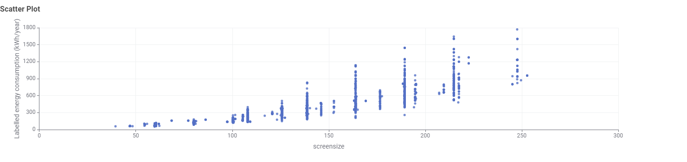
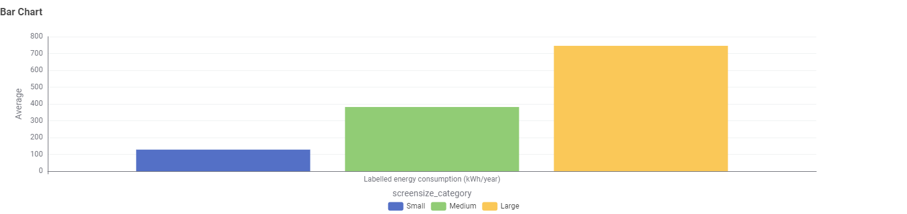

Data Story 1: Does a Bigger TV Use More Energy?
Issue
Consumers often pick a TV based on screen size without knowing whether a bigger screen also means a bigger energy bill every year.
Demonstrate Issue
A scatter plot was used to compare individual TV screen size against its labelled annual energy consumption across the registered models in the dataset.

The chart shows a clear upward pattern: as TVs get larger, their points sit consistently higher on the energy consumption scale, with smaller TVs clustering toward the bottom left and larger TVs clustering toward the top right.
Ideas for Overcoming the Issue
Consumers can address this by not treating screen size and energy consumption as separate decisions by comparing the labelled energy figure alongside screen size when shortlisting models.
Show Before and After
Looking at the smaller cluster of points versus the larger cluster on the chart makes it easy to see how much higher energy use climbs simply by moving from a smaller screen to a larger one.
Recommendation
Always check the energy label next to the screen size, not just the size on its own. Screen size is the strongest single driver of running cost, so it should be weighed against energy consumption at the point of comparison.
Data Story 2: Does TV Size Category Affect Energy Use?
Issue
Consumers often choose a TV size based on budget and room space, without realising that size category alone can make a noticeable difference to how much energy the television uses every year.
Demonstrate Issue
TVs were grouped into Small, Medium, and Large size categories, and their average labelled annual energy consumption was compared in a bar chart.

The chart shows a clear step up in energy use with each size category, where each bar sits noticeably taller than the one before it, with the Large category standing well above Small and Medium.
Ideas for Overcoming the Issue
Consumers can use size category as a quick first filter on running cost, then narrow down further using the energy star rating within that category to find the most efficient model at the size they want.
Show Before and After
Comparing the height of the Large bar against the Medium bar shows how much energy a household could save each year simply by moving down one size category.
Recommendation
Treat size category as an early decision, not an afterthought. Deciding on Small, Medium, or Large before comparing individual models gives a fast, reliable estimate of running cost.